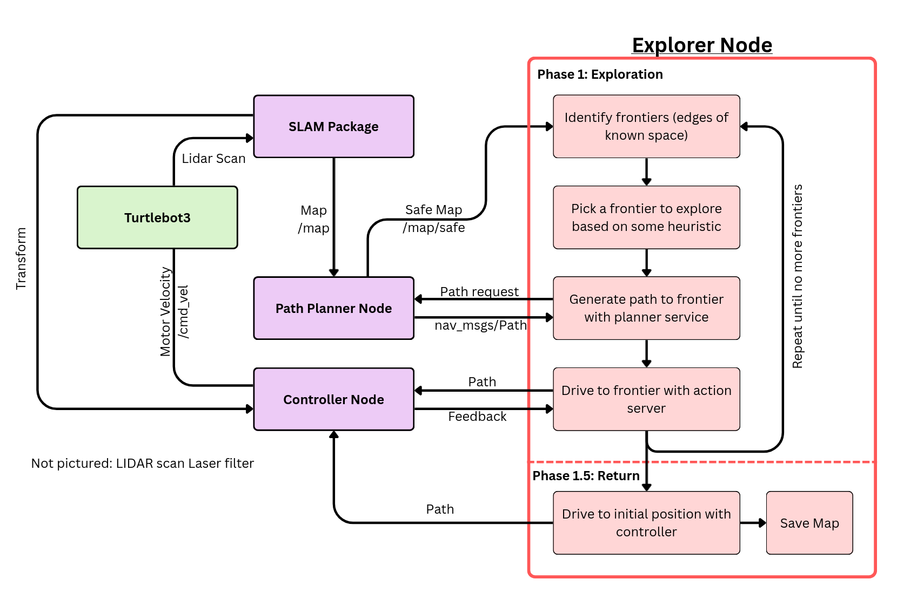
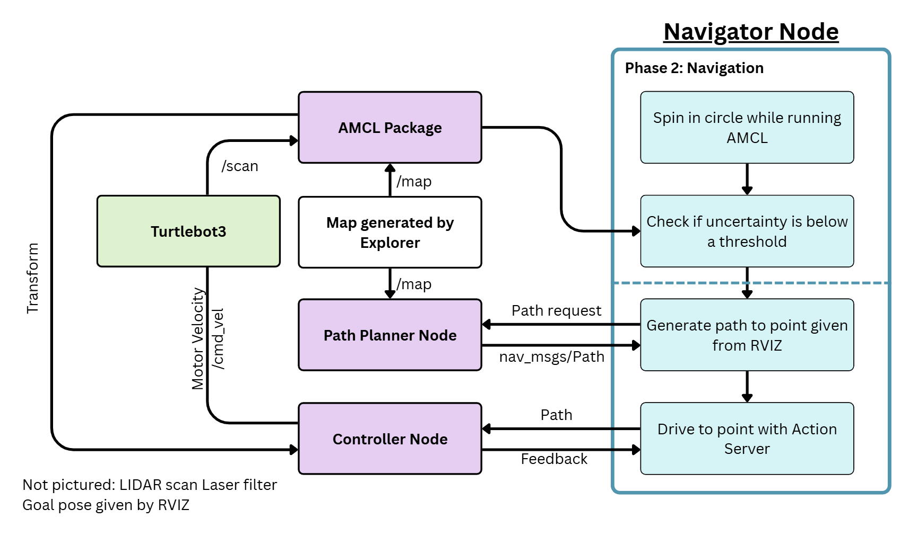
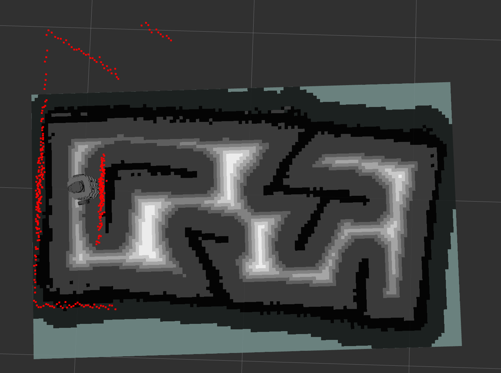
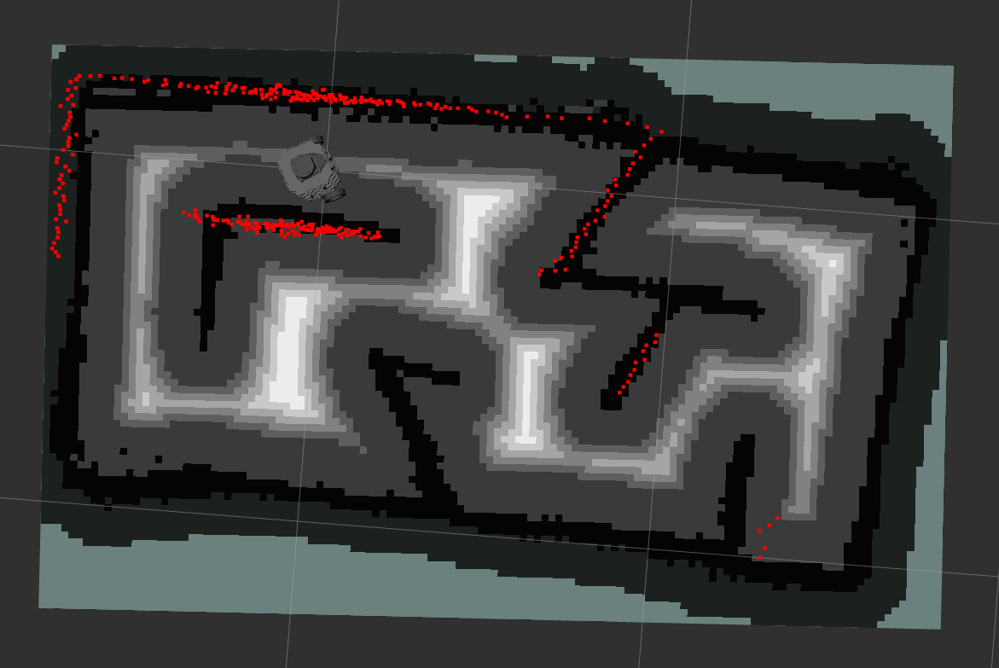

SLAM Pathing and Navigation System
Autonomous maze exploration and map-based navigation on a TurtleBot3 Burger, with a shared ROS 2 software stack tested in Gazebo and on the physical robot.
System overview
This project brings together two autonomous behaviors on a TurtleBot3 Burger: explore an unknown maze, build a map, and return to the start; then use the saved map to localize and navigate to a user-selected goal. The ROS 2 software runs in both Gazebo and on the physical robot, allowing the same nodes and interfaces to be tested in simulation and in the lab.
My contribution
-
Designed and implemented the Controller's ROS 2
follow_pathaction server, including live progress feedback, goal handling, and cancellation. -
Implemented most of the
Frontierclass, which groups 8-connected map cells and provides cell-addition, size, and centroid operations. - Integrated and tested the action server with Planner and Explorer, and helped tune pure pursuit and exploration behavior on the physical robot.
Explorer and frontier selection
The Explorer package consumes the live occupancy map from SLAM Toolbox and
looks for frontier cells: known free cells along the boundary with unknown
space. It groups adjacent cells into frontier regions. Each
Frontier stores its cells as a set, supports adding a neighboring
cell, and computes a centroid that Explorer can use as a planning target.

Explorer ranks candidate frontiers with a weighted score: distance from the robot contributes 45%, heading alignment 35%, and frontier size 20%. The position term in the implementation is disabled. These were the weights on the final robot. Explorer requests a route to the selected frontier, then uses Controller feedback to decide when it has made enough progress to stop and reevaluate against the latest map. When little unknown space or no frontiers remain, Explorer saves the map and plans back to the recorded starting position.
Planner and Controller
The Planner package converts the occupancy grid into a safer configuration space by expanding obstacles and adding a graded risk cost around them. Its A* search combines travel distance with the cost of entering each cell, so a geometrically short route can lose to one with more clearance. A path simplification pass removes redundant collinear grid points before the route is returned to a client.
Controller exposes path following as a ROS 2 action. Its pure-pursuit loop finds a lookahead point on the route and computes the curvature needed to reach it; linear speed is reduced on tighter turns. While driving, the action reports percent complete, distance remaining, and remaining waypoints. Explorer can cancel the active action and choose a new frontier as the map changes, while Controller stops the robot when cancellation is accepted.
Navigator and AMCL
Navigator is a separate mode for using a previously saved map. Instead of SLAM, it runs AMCL, which estimates the robot's pose by comparing lidar observations with the known map. The robot rotates in place to gather observations; Navigator monitors the estimated pose covariance and waits until uncertainty drops below a threshold before accepting a goal pose from RViz. It then requests a route from Planner and sends it to Controller.

Early tests showed AMCL could settle on a visually similar but incorrect location. Tuning its motion-model parameters and global initialization made convergence faster and more reliable. Localization was solid enough for real-world navigation, although it could still be improved.


Results and lessons
The robot explored the maze and returned to its start in 65 seconds during the final end-to-end demonstration. Exploration was fast and rarely collided with obstacles. Lidar artifacts near corners could sometimes appear as phantom obstacles and leave a small area unexplored; tight turns on the return route also remained more challenging for path tracking.
Testing in Gazebo and on the physical TurtleBot3 Burger let us develop and validate the same software architecture across simulation and hardware. The result combines SLAM, frontier exploration, risk-aware A*, action-based path following, and AMCL localization in a modular ROS 2 system.
Tools
ROS 2 Jazzy, Ubuntu 24.04, Python, TurtleBot3 Burger, LDS-01 lidar, SLAM Toolbox, AMCL, Gazebo, RViz